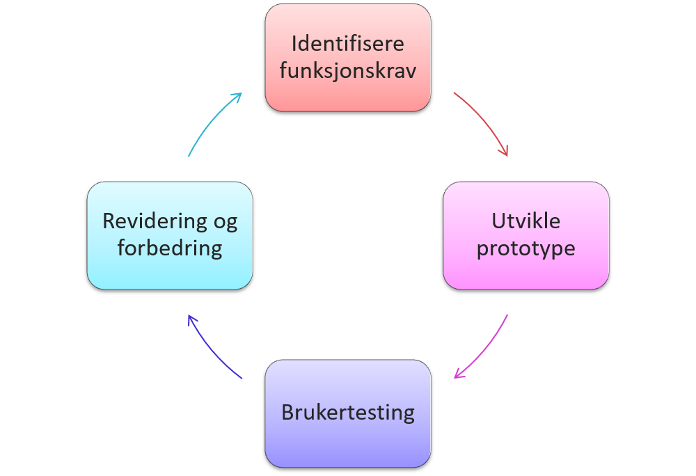
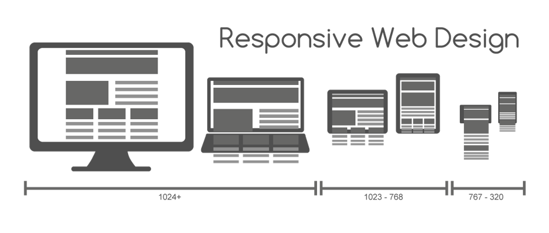
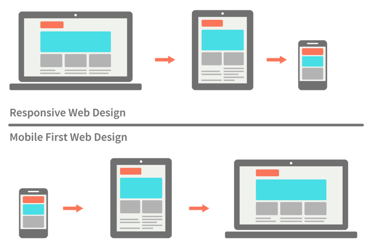

Design Thinking 3 - Virkeliggjøre
Brukervennlig design
- Merk at utseende ikke spiller noen rolle når vi snakker brukervennlig design
- Brukervennlig design handler om at siden har de funksjonene og den informasjonen vi forventer, og at den er enkel å bruke, finne fram på osv.
- Når vi tenker på feltet UX som helhet spiller dog «look and feel» en like stor rolle. En fungerende nettside som ser ut som en hestepære kan gjøre jobben, men bidrar neppe til «joy of use»…
Jakob Nielsen om usability
| Ease of learning | How fast can a user, who has never seen the user interface before, learn it sufficiently well to accomplish basic tasks? |
|---|---|
| Efficiency of use | Once an experienced user has learned to use the system, how fast can he or she accomplish tasks? (Is the system still tedious to use?) |
| Memorability | If a user has used the system before, can he or she remember enough to use it effectively the next time or does the user have to start over again learning everything? |
| Error frequence and severity | How often do users make errors while using the system, how serious are these errors, and how do users recover from these errors? |
| Subjective satisfaction | How much does the user like using the system? |
Hvorfor lages dårlige sider?
Dårlige nettsider er ofte et produkt av fokus på teknologi og egenskaper, og at man derfor ikke vektlegger design og brukervennlighet.
Typisk er at utviklerne er opptatt av hva siden kan, og ikke hva brukerne ønsker seg. Dårlige nettsider kan også være et resultat av at siden er lagd etter datidens trender, og at det fort kan virke utdatert.
Det er også fort gjort å tenke at animasjoner automatisk gjør siden kulere, men dette er ofte ikke tilfelle.
For å hindre at det blir for stort fokus på de teknologiske kvalitetene til nettsiden man utvikler, burde man sette sammen et team der det er en balanse mellom programmerere og designere.
Utviklere antar ofte at brukervennlig design er "common sense", men dette er ikke tilfelle. Om man ønsker å lage en brukervennlig side må man ta hensyn til målgruppen, og bruksområdet.
En måte å finne ut mer om målgruppen er gjennom brukertesting.
Et eksempel på hvordan det kan gå når man tenker på teknologi istedet for brukervennlighet finner du her.
Hva er viktig når man utvikler en nettside?
- Vi må tenke på minstekravet til funksjonalitet
- Hva er kjernefunksjoner? Lag dette før noe annet
- Hvem er det egentlig viktigst for?
- Hva misliker brukeren?
- Prøv å ikke gjør samme feil som konkurrentene! (Porters 5 krefter)
- Hvem skal bruke nettsiden?
- Demografisk profil (alder, interesser, inntekt, bosted etc.)
- Nettvaner
- Teknologikunnskap (IT-ferdigheter)
- Utdanningsnivå
- Fremtidige/eksisterende kunder
Hva må vi vite når man uvikler en nettside?
- Personas (preferanser)
- Fancy grafikk vs enkelt design
- Mange forskjellige preferanser - finn ut hva som virker for din målgruppe
- Brukervaner/atferd
- Hvordan ser lignende nettsider ut? Bruk det samme oppsettet
- Hva virker/virker ikke?
- Stjel skamløst… og bruk analytics på eget nettsted
- Steve Krug “Don’t make me think”
- Logiske lenker osv
- Det som ser klikkbart ut skal kunne klikkes på
Regler for brukervennlig design
- Brukeren skal slippe å tenke:
- Hvor er jeg?
- Hvor skal jeg begynne?
- Hvor har de gjort av…?
- Hva er det viktigste på denne siden?
- Hva kan jeg gjøre her?
- Hvorfor har de kalt det for det?
Konvensjon er måten de fleste gjør ting på. Jacob Nielsen sier at hvis flere enn 50% gjør noe, er det en konvensjon. Ved flere enn 75% er det blitt en standard.
Brukertesting
Hvordan?
- Brukeren er eksperten, og dette er viktig å få frem!
- Mange føler seg dumme når de gjør ting de ikke får til eller ikke forstår, da er det de som utfører testen sin oppgave å formidle at de ikke gjør noe feil.
- Brukeren skal gi førsteinntrykk - det er førsteinntrykket som er viktigst for utviklerne, siden dette viser hvordan en generell bruker reagerer på nettsiden
Fremgangsmåte
- En bruker av gangen
- Be brukeren se på kort med kategorier/ferdig nettsted/skisser og spør:
- “Hva tror du denne gjør?”
- “Kan du prøve å …?”
- Testing bør være en kontinuerlig prosess - men en test er bedre enn ingen!
Tradisjonell brukertesting i forhold til Steve Krug sine anbefalinger (Krug, 2010)
| Tradisjonelt | Steve Krugs anbefaling | |
|---|---|---|
| Antall brukere pr test | 8+ | 3 er nok til å oppdage 80% av problemene |
| Målrettet rekruttering | Match målgruppen for nettstedet | Finn noen som har brukt web et par ganger |
| Testområde | Usabilitylab med enveisspeil og observasjonsrom | Hvor som helst. Hjemme, et kontor, et møterom… |
| Hvem utfører testen? | Erfarne brukertestere med lang opplæring | Hvem som helst med litt tålmodighet og empati |
| Forberedelser | Bookes og planlegges flere uker på forhånd | Ha et par spørsmål. Kjør test når det passer |
| Når bør man teste? | En stor test før lansering | Flere runder i løpet av hele utviklingsprosessen |
| Etterarbeid | En stor og tung rapport | En sides oppsummering |
- Rekruttering: Viktig å treffe målgruppene
- Universiteter, fagside for en profesjon osv.
- Disse har flere ulike brukergrupper - eksempel USN hvor det er alt fra 19 - 65 år
- Hva trengs?
- To stoler, PC, bord, nettilgang, videokamera/telefon
- HUSK! kamera rettet mot skjermen
- Hvem bør observere?
- Alle innvolvert i prosjektet (ideelt sett)
- Hva spør du om, og når skal du teste?
- Før oppstart: Test liknende sider og lær av dem
- Bonus: Du er bedre forberedt når din egen side rives i filler av brukerne…
- Etter førsteutkast/pilot – før lansering
- To ulike tester:
- Get it-test: Vis siden, og be brukeren snakke om hva h*n tror den handler om, hva som kan gjøres der, hvordan siden er organisert, hva h*n forventer å finne bak linkene
- Oppgavetest: Be brukeren utføre en spesifikk oppgave
Ting man kan spør om:
- Hva slags nettsted er dette?
- Hvor på nettstedet er du?
- Kan du beskrive kategoriene på siden?
- Hva kan du gjøre fra dette skjermbildet?
- Hva tror du skjer hvis du klikker på…?
- (Hvordan) kan du søke?
- Hva er det som fanger oppmerksomheten din først?
- …Og deretter?
- Ville du besøke dette nettstedet? Tror du andre ville besøke det?
- Synes du det tok for lang tid å “forstå” nettstedet? Hva er passe?
Mobilvennlig design
Hvorfor?
Brukeren er i bevegelse/endring
- Lokasjon
- Oppmerksomhet
- Dekning
- Måten vi holder og interagerer på
Hva kan gjøres?
- Mobilsider bør være så enkle som mulig, fordi kontekst og innhold varierer.
- Siden mobiler har andre grensesnitt (ikke mus og tastatur, men klikk/pek, gps, bevegelse)
- Kan dette utnyttes? Hva med telefoner som ikke har sånne funksjoner?
- Selv om de fleste i dag har en kraftig mobil, har ikke alle det. Tenk bestemor på 80 år. I tillegg varierer dekning og tilgjengelighet. Pga dette er det ekstra viktig å følge standarder.
Hvordan teste for mobil?
- Feltstudier – Følg testbrukerne i hverdagen og se hvordan bruken endrer seg gjennom dagen
- Morgentrøtt surfing
- på bussen på vei til jobb
- gjennom arbeidsdagen
- I lunsjen
- på bussen hjem
- på kvelden foran TV mens vi gjør andre ting… og så videre
- Men… de færreste av oss har anledning til det, så vi kan gjøre noen triks på laben for å simulere skiftende kontekst:
- Spille musikk/video i bakgrunnen
- Få folk til å stikke innom og avbryte testpersonen
- Få testpersonen til å gå på tredemølle mens hun tester
- Lage en hinderløype testpersonen skal gå gjennom mens hun prøver å løse oppgaven
Kvantitativ brukertesting vs kvalitativ brukertesting
- Kvalitative brukertester: Få testpersoner, rike data
- Kvantitative: Mange testpersoner, målbare data som kan telles og analyseres. Mindre dybde og rikhet
Andre testmetoder:
- Heuristisk evaluering - Jacob Nielsen
- Synlig status – Hva gjør jeg, hvor er jeg?
- Bruk symboler fra virkelige verden
- Gi kontroll og frihet til brukeren
- Konsistens og konvensjoner
- Hjelp brukeren å unngå feil
- Gjenkjenne, ikke huske
- Fleksible, men enkle systemer
- Minimalistisk design
- Hjelp brukeren å gjenkjenne/unngå feil
- Hjelpesider og dokumentasjon. Baser deg gjerne på Nielsen, men finn dine egne målepunkter
- Geriljatesting
- Testerne utgjør en liten gruppe med «geriljasoldater»
- Testerne oppsøker brukerne der de oppholder seg naturlig (e.g. på gata, biblioteket, etc).
- Testerne utfører «bakholdsangrep» på brukerne gjennom spontane forespørsler om deltakelse i små brukertester der og da.
- Er kjapt, kosteffektivt og testerne kan treffe brukere med ønsket demografi (e.g. ungdom, pensjonister, etc).
- Observeres ved brukerens interaksjon
- Eyeball tracking og andre teknikker brukes her
- Brukeren skriver ned når, hvorfor og hvordan de bruker(nettsiden). Hver gang.
- Hykke folk på gata, eller brukertester som vi har gått gjennom
- Dette kan gjøres ved apper som sporer hva brukeren gjør på siden. Gjerne med spørsmål “Prøv å finn frem til ‘kontakt oss’”
- To ulike landingssider, se hvilken som er best
- Etter brukeren har gjort noe får h*n opp spørsmålet : “Fant du det du lette etter?”
Prototyping
Hypertext og Hypermedia - Dette er konsepter vi i dag ikke tenker over i dag. Det er helt naturlig for oss å klikke på lenker på nettsteder og forvente at vi da blir sendt videre. Det som står i lærebøker om formidling av budskap gjennom start-innhold-slutt er nå helt utdatert. Tenk wikipedia. Kommer du noen gang til slutten der? Det er det start-start-innholdx1000 og man kommer aldri til slutten.
Prototyping - lages før brukergrensesnittet programmeres. Jobben til en prototype er å dokumentere vår forståelse av brukerens behov. Hvis brukeren er fornøyd kan vi bygge brukergrensesnittet. Brukes for å få tidlige tilbakemeldinger på idèer, slik at vi sparer tid, penger og innsats.
Prototypeprosessen
Lo-fi prototyper
- Lite eller ingen Interaksjon
- Krever lite innsats
- Ingen eller delvis fungerende funksjonalitet
- Kan lages i papir
- Uforpliktende og lettere å kaste
- I og med at det er papir, kan det ikke forveksles med endelig produkt
Hi-fi prototyper
- Mye interaksjon
- Funksjonalitet som fungerer
- Krever innsats å lage
- Forpliktende - vanskelig å kaste
- Kan forveksles med endelig produkt
Responsivt design
I dag er vi på mange flere plattformer enn på en stasjonær pc med en standard skjerm. Vi har større skjermer, pad/tablet og mobil. Responsivt design er derfor viktig for å optimalisere bruken etter behov/plattform og tilstedeværelse av brukeren.
Skalere opp eller skalere ned? Det er det store spørsmålet. Mange sier “mobile-first” fordi det er stadig mer trafikk fra mobil. Desktop first kan være en god strategi på komplekse sider. Nav.no og DNB.no mister noen funksjoner på mobil vs desktop, så her må det lukes.
Hva må vi tenke på når vi koder til mobil?
- Mobil har en begrenset skjermflate - dette må menyer, reklame og andre elementer ta hensyn til.
- Streb etter et oppsett som dette på mobilen.
Tre prinsipper å følge
- Fluid grids
- Skaleres sammen med siden
- Husk at ved store skjermer kan det bli for stort!
- Fluid images
- Må angi min/max størrelse for eksempel i https://pixlr.com/editor/ eller photoshop
- Media queries
- CSS’ svar på if/else
Retningslinjer for “mobile-first”
- Enkel navigasjon
- Viktigst først
- Linker skal skille seg ut
- Ikke mange nivåer
- Enkelt innhold
- Alt skal fungere på liten skjerm
- Unngå plugins
- Minimer brukerinput
- Kort URL, korte skjema ( mange misliker mobiltastatur)
- KUN vertikal scrolling (kan bruke swipe til elementer det er naturlig)
Responsivt eller adaptivt?
- Responsivt
- Samme design, noen forandringer
- Graceful degradation - Skalerer godt, men mister noe
- Enklere å håndtere - mindre kode
- Kan føles begrensende å bruke mobile-first hele tiden
- Vanskeligere med reklame/annonser
- Adaptivt
- Bruker @media queries i mye høyere grad for å tilpasse designet til mediet(enheten
- Kan også ha flere stilark for de forskjellige medier(enheter)
- Flere valgmuligheter enn responsivt. Eksempel større knapper for pølsefinge
- Enklere å bygge gode brukeropplevelser på alle plattformer
- Legger til masse kompleksitet
Bootstrap
Hvorfor designe selv når det finnes rammevertk?
- CSS for:
- Grids
- Skjema og knapper
- Tabeller
- Meny/navigasjon
JS-bibliotek inkludert.